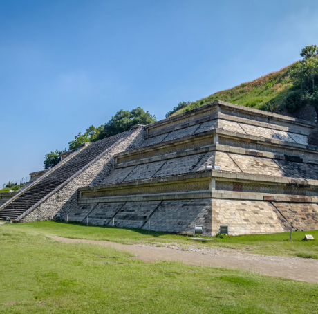
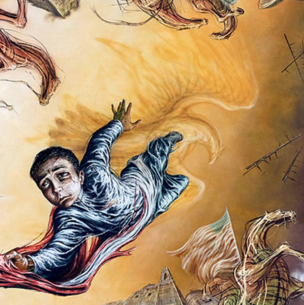

Datos Curiosos
La pirámide más grande del mundo: Está en Cholula, Puebla. Su base es cuatro veces más grande que la de la Gran Pirámide de Guiza en Egipto.

La Ciudad de México se hunde: Al estar construida sobre el antiguo lago de Texcoco, la capital se hunde entre 10 y 50 centímetros cada año.

El impacto de los dinosaurios: El asteroide que provocó la extinción de los dinosaurios cayó en Chicxulub, Yucatán, formando también la red de cenotes.

Mito: Juan Escutia se arrojó envuelto en la bandera.
• Realidad: Es una historia romántica creada en el siglo XIX para fortalecer la identidad nacional; no hay registro histórico que lo compruebe.

Mitos Desmentidos
Mito: El 5 de mayo es el Día de la Independencia.
• Realidad: La Independencia se celebra el 16 de septiembre. El 5 de mayo se conmemora la victoria contra el ejército francés en la Batalla de Puebla.
Mito: Hernán Cortés quemó sus naves.
• Realidad: Nunca las quemó; las barrenó (les hizo hoyos en el casco) para encallarlas y reocupar la madera y herramientas más adelante.